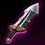

Sett into Aatrox
Patch 26.19 All collected regions
Your first item sets the pace.
Stridebreaker first is the common route here. Boots first changes when that item arrives.
01What changes against Aatrox
Steelcaps appear in 76% of builds, up from 49% across Sett’s matchups.
02Look past the win rate
Sterak’s has a positive adjusted estimate. Its uncertainty still matters when comparing options.
01Lock in your setup
Most common choices vs Aatrox
Second Wind · Unflinching
Show full rune page
Triumph · Legend: Alacrity · Last Stand
Attack speed · Adaptive force · Health
Illustrative selected rune page.
58% pick this pair
Alternative: Teleport · 37%

+ Health Potion · 71%
First three levels: W → E → Q
One build. See the trade-off.
Select an item to compare its slot. Times belong to this route.
When the items come online
Same clock. Both sides. Average completion times for this route.
Earlier completion describes timing; it does not establish who wins a fight. Aatrox’s route is held constant for this illustration.
A few more games before a clear picture.
The general build above is available. Route-specific timings will appear when there are enough games against Aatrox.
Behind the recommendation Samples, uncertainty & methodology
This is an interactive design study
Every percentage, time and estimate on this page is illustrative. The sample selector demonstrates a populated matchup and a limited-data fallback. Neither is connected to live results.
Choose a route to update the build, timeline and slot comparisons together. Select a build item or slot tab to inspect alternatives. Comparisons describe alternatives; they do not edit the selected route.
What the eventual data needs to support
Route-conditioned timing distributions and comparisons need a dedicated export. WPA is an experimental adjusted outcome estimate, not proof of an item’s causal effect. A positive estimate can still be inconclusive when its interval crosses zero.
Rune pages, spell pairs and starts are shown as common choices. Their individual popularity does not establish an optimal combined loadout.